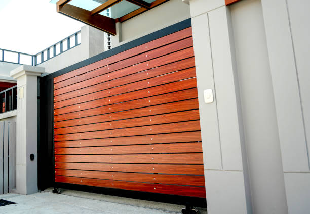

Calumet Pennsylvania
info@securedrivewaygates.pro
Calumet Pennsylvania
info@securedrivewaygates.pro

Transform your Calumet Pennsylvania home with custom driveway gates tailored to your style. Durable, secure, and expertly installed by local professionals. Elevate your property’s aesthetics and security with us.
Click Here To Call Us (877) 848-1711Enhance the security, privacy, and aesthetic appeal of your property in Calumet Pennsylvania with our expertly crafted driveway gates. At Secure Driveway Gates, we specialize in designing, manufacturing, and installing custom driveway gates that not only offer superior protection but also add a touch of elegance to your home. Our gates are built to last, using high-quality materials that withstand the elements and require minimal maintenance.
In Calumet Pennsylvania we understand the importance of a secure and welcoming entrance. That’s why our team of skilled professionals works closely with you to create a gate that complements your property’s architecture and meets your specific security needs. Whether you’re looking for a modern, sleek design or a more traditional look, we have the expertise to bring your vision to life.
Our driveway gates come equipped with the latest technology, including automatic openers, remote access, and security features that ensure your peace of mind. We also offer a variety of finishes and styles, allowing you to customize your gate to match your home’s exterior and landscape.
Choosing Secure Driveway Gates in Calumet Pennsylvania means choosing a company committed to excellence. We take pride in delivering top-notch service, from the initial consultation to the final installation. Our reputation for quality workmanship and customer satisfaction makes us the preferred choice for driveway gates in Calumet Pennsylvania .
Secure your property with style. Contact us today to schedule a consultation and discover why homeowners in Calumet Pennsylvania trust Secure Driveway Gates for all their driveway gate needs.
Residential & commercial Driveway Gates
Quality services at affordable prices
Immediate 24/ 7 emergency services


Choosing the right driveway gate for your property in Calumet Pennsylvania can significantly enhance both security and curb appeal. At Secure Driveway Gates, we understand the importance of selecting a gate that aligns with your aesthetic preferences and functional needs.
Start by considering the style that best complements your home's architecture. Whether you prefer the classic elegance of wrought iron, the modern look of aluminum, or the rustic charm of wood, our extensive range of options ensures you’ll find a design that suits your property. Each material offers distinct advantages: wrought iron gates are durable and customizable, while aluminum gates are low-maintenance and resistant to rust. Wooden gates, on the other hand, provide a warm, traditional feel but require regular upkeep.
Functionality is another crucial factor. Automatic gates offer unparalleled convenience, allowing you to control access with the push of a button, which is ideal for high-traffic areas or added security. Manual gates, while requiring physical effort, can be a more cost-effective solution and are often chosen for their simplicity and reliability.
Additionally, think about the size and configuration of your driveway. Our team at Secure Driveway Gates will help you measure and select a gate that fits perfectly and operates smoothly within your space. We also provide options for added security features, including intercom systems and remote controls, to enhance your property’s safety.
Choosing the right driveway gate is an investment in your home’s security and aesthetics. Contact Secure Driveway Gates in Calumet Pennsylvania today to explore our range of high-quality options and get expert guidance tailored to your needs.
Residential & commercial Driveway Gates
Quality services at affordable prices
Immediate 24/ 7 emergency services
Embrace modern technology with our electric driveway gate installation services . Electric gates provide seamless access with a touch of a button, making them a popular choice among homeowners and businesses. We offer a selection of electric gate styles and operation systems tailored to your preferences. Our team takes pride in delivering professional installation while ensuring safety and functionality are prioritized. Choose us for electric driveway gate installation, and experience the convenience and security that electric gates bring.

If your driveway gate has seen better days, it might be time for a replacement. Our driveway gate replacement services ensure you receive a high-quality, stylish new gate that meets your needs. We offer a wide range of designs, materials, and automation features, allowing you to customize your new gate perfectly. Our experienced team will handle the removal of your old gate and the installation of the new one, ensuring a hassle-free process from start to finish. Trust us for dependable and stylish driveway gate replacements that elevate the security and look of your property.

Secure your property more effectively with advanced gate access control systems from Driveway Gates. we offer comprehensive solutions designed to give you full control over who enters your property. Our access control systems can include keypads, intercoms, remote access features, and even smartphone integration, providing convenience and security at your fingertips. Our expert team will work with you to assess your needs and recommend the best system for your property. We ensure seamless integration with your existing gates and provide professional installation and ongoing support. Enhance your property’s security with our reliable gate access control systems and enjoy peace of mind every day.

Steel driveway gates are renowned for their strength and durability, making them an excellent choice for homeowners seeking high security. At Driveway Gates, we specialize in installing steel driveway gates that offer robust protection while elevating the appearance of your property. Our skilled installers know how to create striking steel gates that are functional and visually appealing.
Our steel gates are designed to withstand the elements while providing peace of mind regarding your property’s safety. We work closely with our clients to ensure the design aligns with their vision, whether you prefer a simple design or intricate details. When you choose us for your steel driveway gate installation, you’re making a choice for quality, security, and professional service.

Gate automation is revolutionizing the way we secure our properties. At Driveway Gates, we specialize in transforming traditional gates into automated systems that enhance security and convenience. Our gate automation services offer seamless integration with various access control options such as remote operation and smartphone control.
Our skilled technicians have extensive experience in gate automation, ensuring that your system is installed correctly and functions flawlessly. We assess your existing gate and recommend the best automation solutions tailored to your needs. By partnering with us, you invest in advanced technology that enables hassle-free access while maintaining robust security for your property.
When looking for a reliable driveway gate company near you, trust us to deliver. Our team is well-known for providing top-quality gate installation, repair, and maintenance services. We understand that finding a local provider is essential for timely service, especially during emergencies. Our dedication to our community ensures that we are always available to assist you with professional expertise and a friendly approach. As your local driveway gate company, we are committed to deliver high quality, affordable solutions tailored to your needs.
alooma23id

Automatic sliding gates provide convenience and security but can sometimes encounter issues due to wear and tear or mechanical failure. At Driveway Gates, we offer specialized automatic sliding gate repair services . Our experienced technicians are well-versed in troubleshooting and repairing various sliding gate systems, ensuring that any problems are resolved efficiently and effectively. We prioritize quick response times, knowing the importance of getting your gate back in working order as soon as possible. By using high-quality replacement parts and providing transparent pricing, we ensure customer satisfaction and reliable service. Trust us to restore your automatic sliding gate's functionality and security!

If your driveway gate isn’t opening or closing properly, the issue might lie with the gate operator. Our driveway gate operator repair services ensure that your gate operates with maximum efficiency. We offer comprehensive repairs for all types of gate operators, identifying issues swiftly and providing effective solutions. Our team is dedicated to transparency and communication, providing quotes up front and keeping you informed throughout the repair process. Trust us to restore your gate operator to its optimal performance; your satisfaction is our priority.
Years Experience
Expert Technicians
Satisfied Clients
Compleate Projects
At Secure Driveway Gates, we understand that your driveway gate is more than just an entryway—it's a statement of security, style, and convenience. Serving all cities in Calumet Pennsylvania we pride ourselves on delivering top-notch gate solutions tailored to your specific needs. Here's why choosing us is the best decision for your property:
Unmatched Expertise: Our team of professionals has extensive experience in designing, installing, and maintaining driveway gates. Whether you’re looking for a sleek modern design or a classic wrought iron gate, we have the skills and knowledge to bring your vision to life.
Quality You Can Trust: We use only the highest quality materials and the latest technology to ensure that your driveway gate is not only beautiful but also durable and secure. Our gates are built to withstand the elements and provide long-lasting protection for your property.
Customer-Centric Approach: At Secure Driveway Gates, we put our customers first. From the initial consultation to the final installation, we work closely with you to ensure that your project is completed to your satisfaction. Our commitment to exceptional customer service is what sets us apart from the competition.
Comprehensive Services: We offer a full range of services, including custom design, professional installation, regular maintenance, and prompt repairs. No matter what your driveway gate needs are, we have you covered.
Choose Secure Driveway Gates in Calumet Pennsylvania for a seamless, stress-free experience and a driveway gate that truly enhances the value and security of your property.
When it comes to enhancing the security and aesthetics of your property, choosing professional driveway gate installation services is essential. A driveway gate not only offers peace of mind but also provides a welcoming entrance to your home or business. At Driveway Gates, we specialize in custom driveway gates tailored to meet your specific needs. Our team of skilled installers is committed to providing high-quality workmanship, ensuring that your gate functions perfectly while looking stunning. With years of experience in the industry, we combine durability with design, ensuring that every gate we install enhances the overall appeal of your property. We pride ourselves on using top-grade materials, and our comprehensive installation services are designed to exceed your expectations. Choose us for a seamless installation experience!
If your electric gate is malfunctioning, it can be inconvenient and potentially compromise your property’s security. At Driveway Gates, we offer prompt and efficient electric gate repair services in Calumet Pennsylvania . Our team specializes in diagnosing and fixing a wide range of issues, from mechanical failures to electrical malfunctions. We understand the urgency of getting your gate back in working order, which is why we provide same-day service in most cases. Our technicians are well-trained and equipped with the latest tools and technology to handle any repair needs. With our commitment to customer satisfaction, we ensure that you receive transparent service with no hidden fees. Trust us to restore your electric gate functionality swiftly and accurately!
Imagine driving up to your home or business and having your gate open automatically. That’s the luxury and convenience of automatic driveway gates. Our automatic driveway gates in Calumet Pennsylvania are designed with technology and safety in mind. We offer various options, from simple remote access to advanced gate automation systems that integrate with your home technology. Our team not only installs high-quality automatic gates but also provides support and maintenance to keep them operating flawlessly. With our professionalism and expertise, you can trust us as the top choice for automatic driveway gate solutions .
At Driveway Gates, we understand that every home is unique and deserves a driveway gate that reflects its individuality. That’s why we offer custom driveway gates tailored to your specifications. Our design team works closely with you to create a gate that not only enhances your property’s aesthetics but also fulfills your security needs.
Whether you prefer a traditional wooden gate or a sleek modern metal design, we have the skills and resources to bring your vision to life. Custom gates are an investment in your property’s long-term security and appeal, and our experts have the experience to ensure your gate is designed and installed perfectly. We take pride in our craftsmanship and attention to detail, making us the preferred choice for homeowners looking for personalized service and exceptional results.
Sliding driveway gates are an ideal choice for properties with limited space. At Driveway Gates, our experienced team specializes in sliding gate installation, ensuring that your new gate smoothly glides open and closed with ease. Our skilled technicians understand the mechanics of sliding gates and take care to select the right materials and components that ensure longevity and reliability.
Investing in a sliding driveway gate not only enhances your property’s security but also adds a touch of elegance. Our sliding gates can be customized to fit your style and budget, and our meticulous installation process ensures optimal functionality. We guarantee that your gate will operate smoothly and provide the security you need. Trust us to deliver high-quality service and exceptional results, making us the leading choice for sliding gate installations.
Is your driveway gate motor giving you trouble? At Driveway Gates, we offer specialized driveway gate motor repair services in Calumet Pennsylvania . Our skilled technicians are trained to identify and resolve a variety of motor issues quickly and efficiently. Whether the motor is sluggish, making strange noises, or stops working altogether, we have the expertise to diagnose and repair the problem effectively. Our service is prompt, and we aim to minimize disruption to your routine. By using only high-quality parts, we ensure that your driveway gate runs smoothly for years to come. With our affordable pricing and dedication to quality service, you can count on us to restore your driveway gate motor to its optimal functionality!
A beautiful residential driveway gate not only adds value to your home but also enhances curb appeal and security. Our residential driveway gates are designed to meet the needs of modern homeowners. We offer a wide range of styles and materials, from elegant wooden gates to robust steel designs, ensuring you find the perfect match for your home. Our team specializes in consultation, offering expert advice to help you choose a gate that fits your aesthetic while providing top-notch security. With us, you’re not just getting a gate; you’re making a lasting investment in your home's value and safety.
When your driveway gate needs repairs, affordability is key without compromising quality. Our affordable driveway gate repair services ensure that you receive high-quality repairs at prices that won’t break the bank. We understand the importance of securing your property, and we strive to deliver value for your money. Our skilled technicians provide thorough inspections followed by detailed repair plans that fit your budget. No job is too small or too big for us, and we pride ourselves on transparency and honesty in our pricing. Choose us for your driveway gate repairs and experience reliable service without the hefty price tag.
Finding affordable driveway gate repair services that don’t compromise on quality can be a challenge. At Driveway Gates, we offer competitive rates for driveway gate repair services without sacrificing the quality of work. We believe that everyone deserves to feel secure without breaking the bank. Our trained technicians have the skills and tools needed to diagnose and repair any issues with your driveway gate promptly. From minor repairs to complex issues, we handle it all with professionalism and expertise. When you choose us, you can rest assured that you’re receiving excellent service at an affordable price, ensuring your driveway gate remains functional and secure for years to come.
For business owners, the security of your premises is paramount. Our commercial driveway gate installation services in Calumet Pennsylvania provide secure access solutions that meet the unique demands of commercial properties. We offer a variety of gate styles, materials, and automation options tailored to your business needs. Our experienced team handles everything from design to installation, ensuring minimal disruption to your operations. With our commercial driveway gates, you can enhance security while keeping your property accessible and attractive. Let us be your partner in protecting your business with our top-notch installation services.
Choosing the right installer for your driveway gate can significantly affect its performance and lifespan. At Driveway Gates, we pride ourselves on being the best driveway gate installers in Calumet Pennsylvania . Our team comprises seasoned professionals who are passionate about delivering top-notch installation services tailored to your unique needs. We offer a wide selection of gate designs, materials, and automation systems, ensuring every client finds the perfect match for their property. Our commitment to using high-quality materials and exceptional craftsmanship sets us apart in the industry. We also focus on customer education, making sure you understand your gate's operation and maintenance. Experience the difference by choosing us for your driveway gate installation!
A malfunctioning gate opener can disrupt your daily routine, leading to frustration and security concerns. Our gate opener repair services in Calumet Pennsylvania are here to help. We specialize in diagnosing issues related to gate openers, including remote malfunctions, electrical failures, and mechanical problems. Our experienced technicians quickly assess the situation and provide effective solutions to restore your gate opener’s functionality. We prioritize customer satisfaction, ensuring reliable and professional service that gets your gate operational again. Count on us for your gate opener repair needs and regain unrestricted access to your property.
Iron driveway gates are renowned for their strength, durability, and classic elegance, making them an excellent choice for security-conscious homeowners. At Driveway Gates, we offer top-quality iron driveway gate installation services . Our expert ironwork artisans craft gates that not only enhance the security of your property but also add a touch of sophistication. We provide a range of custom designs and finishes to suit any architectural style, ensuring that your new gate stands out. Our skilled installation team guarantees a secure and lasting fit, using the best practices in the industry. Choose us for your iron driveway gate installation and enjoy peace of mind knowing your property is protected by a stunning barrier.
When your driveway gate malfunctions, you need local gate repair services that are quick and reliable. Our team is based in Calumet Pennsylvania offering prompt service to address all your gate repair needs. Whether it's a broken hinge, a faulty motor, or general wear and tear, we’re equipped to handle it all. Our commitment to serving the local community means you can expect great customer service, fair pricing, and expertise in every repair. We strive to get your gate back in perfect working order as swiftly as possible. Choose local service; choose quality you can trust!
Regular maintenance of your driveway gate can save you time and money in the long run. Our driveway gate maintenance services in Calumet Pennsylvania are designed to keep your gate in excellent condition, ensuring it operates smoothly and efficiently. Our technicians provide thorough inspections, lubrication of moving parts, and adjustments as needed to prevent major issues before they arise. We believe in being proactive and helping our customers avoid costly repairs down the road. Trust us to help you maintain the security and functionality of your driveway gate with our professional maintenance services.
Security driveway gates are a critical component in protecting your property against unauthorized access. At Driveway Gates, we specialize in high-quality security driveway gates designed to provide ultimate protection for your home or business. Our gates come with the latest features, including robust locking systems and various automation options, ensuring enhanced security without compromising style. We work with you to understand your specific security needs, offering customized solutions that fit your requirements perfectly. Our professional installation ensures that your security gate operates reliably and effectively, and we provide ongoing support for long-term maintenance. Choose us for security driveway gates that safeguard your property and provide you with peace of mind.
If you're searching for “automatic gate repair near me” look no further than Driveway Gates. We understand that a malfunctioning automatic gate can be a source of frustration and concern for property owners. Our local team is equipped with the skills and tools needed to address a wide range of automatic gate issues, from electrical problems to mechanical failures. We pride ourselves on our quick response times and high-quality repairs, ensuring that your gate is functioning correctly as soon as possible. Our technicians are not only experienced but also committed to providing friendly and professional service. Choose us for your automatic gate repair needs and ensure your property’s security and convenience!
Ensuring your driveway gate is compliant with local regulations in Calumet Pennsylvania is crucial for both safety and legal reasons. At Secure Driveway Gates, we are committed to guiding you through the process to ensure your gate meets all necessary codes and standards.
Start by checking with your local zoning office or municipal building department to understand specific regulations that may apply in your area. These regulations can cover various aspects, including gate height, design, and operational requirements. By familiarizing yourself with these guidelines, you can avoid potential fines and ensure your installation adheres to legal standards.
Next, consider the safety features required by local codes. Regulations often mandate features like safety sensors or automatic reversing mechanisms to prevent accidents. Our team at Secure Driveway Gates is well-versed in these requirements and can integrate these essential safety features into your gate to meet compliance standards.
Permitting is another important aspect. In many areas, you will need a permit before installing a new driveway gate. Secure Driveway Gates can assist you in navigating this process, from applying for permits to coordinating with local authorities to ensure your installation is approved.
Finally, trust our experienced professionals to handle the installation process. Our commitment to compliance ensures that every aspect of your gate, from its design to its operation, meets local regulations in Calumet Pennsylvania . Contact Secure Driveway Gates today for expert advice and installation services that guarantee your driveway gate is both functional and compliant.
Calumet is a census-designated place in Mount Pleasant Township, Westmoreland County, Pennsylvania, United States. Although the United States Census Bureau included it as a census-designated place with the nearby community of Norvelt for the 2000 census, they are in reality two very different communities, each reflecting a different chapter in how the Great Depression affected rural Pennsylvanians. As of the 2010 census, Calumet-Norvelt was divided into two separate CDPs officially. Calumet was a typical 'patch town,' another name for a coal town, built by a single company to house coal miners as cheaply as possible. The closing of the Calumet mine during the Great Depression caused enormous hardship in an era when unemployment compensation and welfare payments were nonexistent. On the other hand, Norvelt was created during the depression by the US federal government as a model community, intended to increase the standard of living of laid-off coal miners.
We provide driveway gate services throughout Calumet Pennsylvania and the surrounding areas.
Yes, we offer eco-friendly solar-powered gate systems for homes and businesses in Calumet Pennsylvania .
Yes, we offer inspections to ensure your gate is safe and functioning properly in Calumet Pennsylvania .
Yes, we can fix or replace gate hinges to ensure smooth operation of your driveway gate .
Driveway gates provide increased security, privacy, and curb appeal for your property .
Yes, Secure Driveway Gates can integrate security systems, including cameras and intercoms, with your gate .
Yes, we provide fully customized driveway gate design services tailored to your specific needs and preferences .
Yes, we specialize in repairing and restoring wrought iron driveway gates .
Yes, we specialize in repairing electric driveway gates for both residential and commercial properties .
Yes, we offer custom wooden driveway gates that can be tailored to your property in Calumet Pennsylvania .
Yes, Secure Driveway Gates can replace your old or damaged gate with a new one that fits your needs .
The installation process typically takes one to two days, depending on the complexity of the gate and setup in Calumet Pennsylvania .
Yes, we install and repair driveway gates with remote control access for convenience and security .
We offer a variety of materials, including wrought iron, aluminum, wood, and steel, for driveway gates in Calumet Pennsylvania .
We recommend servicing your gate at least once a year to prevent issues and extend its lifespan .
Yes, we can automate your existing driveway gate or install a new automated system .
Yes, we provide free consultations to help you choose the best driveway gate options for your needs in Calumet Pennsylvania .
Secure Driveway Gates provides installation, repair, and maintenance services for driveway gates .
Yes, we specialize in installing automatic driveway gates for homes and businesses .
Yes, we can repair or replace malfunctioning gate motors to restore automatic function in Calumet Pennsylvania .
Regular maintenance such as cleaning, lubricating hinges, and checking for wear will help keep your driveway gate in top condition .
Yes, we specialize in repairing and refinishing rusted metal gates, restoring their appearance and function .
Yes, Secure Driveway Gates can diagnose and repair issues that prevent your gate from closing properly .
Secure Driveway Gates offers additional security features like access control systems and security cameras for enhanced protection .
Yes, Secure Driveway Gates provides installation and repair services for commercial driveway gates .
You can contact Secure Driveway Gates for a free estimate by phone or through our website .
Yes, we offer regular maintenance services to ensure your gate operates smoothly year-round .
Contact Secure Driveway Gates immediately for prompt repair service if your gate is stuck or malfunctioning .
Yes, Secure Driveway Gates offers 24/7 emergency repair services for driveway gates .
The cost depends on the size, material, and features, but Secure Driveway Gates offers free estimates for projects in Calumet Pennsylvania .
I had a great experience with Secure Driveway Gates in Calumet Pennsylvania . The team was professional, knowledgeable, and did an excellent job installing our driveway gate. The gate looks fantastic, and the whole process was smooth and hassle-free. I would definitely recommend Secure Driveway Gates to anyone in Calumet Pennsylvania .
Profession
Secure Driveway Gates in Calumet Pennsylvania provided excellent service and installed a high-quality gate for us. Their team was friendly, knowledgeable, and efficient. The gate looks great and works flawlessly. We appreciate their professionalism and dedication to customer satisfaction. We highly recommend them to anyone.
Profession
Secure Driveway Gates in Calumet Pennsylvania provided outstanding service. The installation team was prompt, professional, and did an excellent job. The gate looks beautiful and adds a lot of value to our property. We are very happy with the end result and would highly recommend Secure Driveway Gates to others.
Profession
Calumet PA Driveway Gates Pros
(877) 848-1711
info@securedrivewaygates.pro
09.00 AM - 09.00 PM
09.00 AM - 12.00 PM